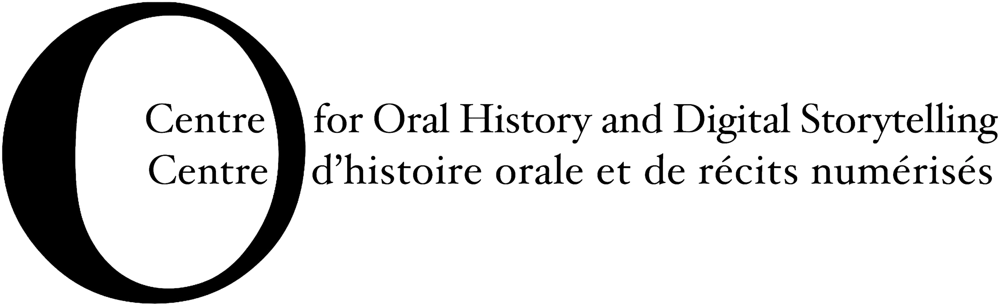

Atlascine can be viewed and tested here. Public releases of the software, updates and in-depth tutorials for its use and deployment can be found by visiting the project's Github page. Please do not hesitate to contact us for any kind of assistance or inquiries about developing your own atlas with Atlascine. Atlascine was designed in close collaboration with the Geomatics and Cartographic Research Center (GCRC) at Carleton University (Ottawa).
Atlascine would not be possible without its funders, the Social Science and Humanities Research Council and CANARIE, as well as Concordia University for its infrastructures, the Geomatics and Cartographic Research Centre (GCRC) at Carleton University, and its founding partners, the Centre for Oral History and Digital Storytelling and Page Rwanda.